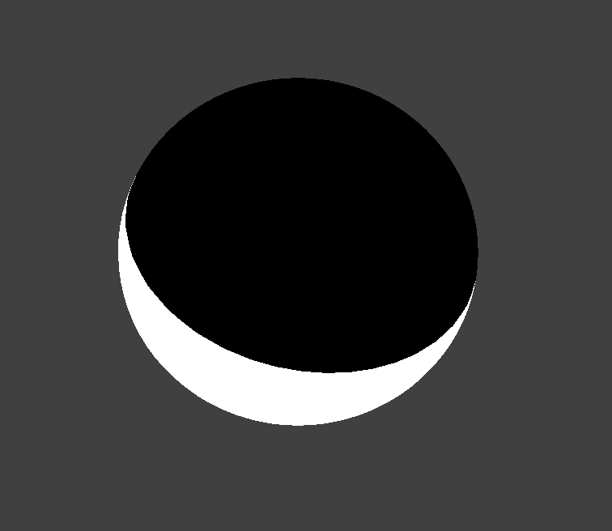
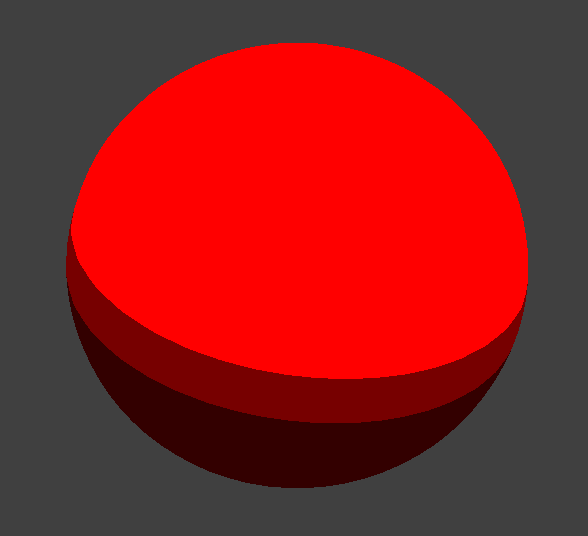
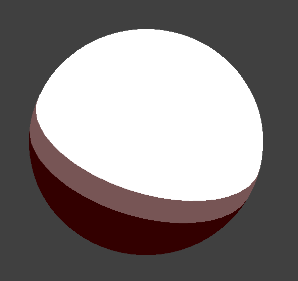
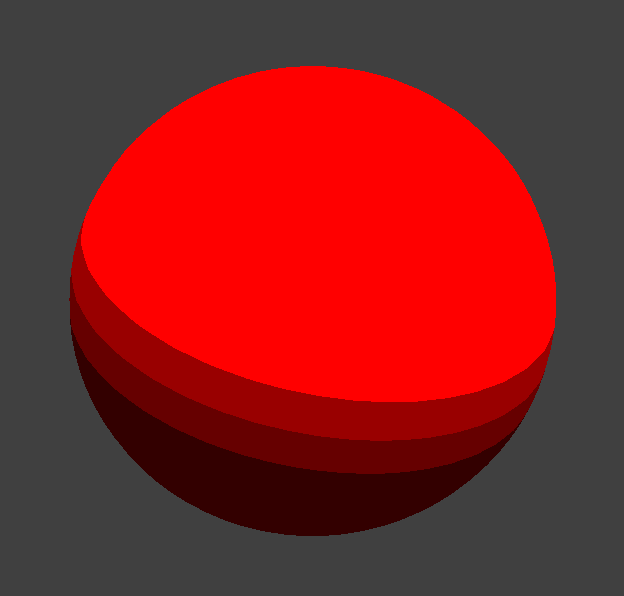
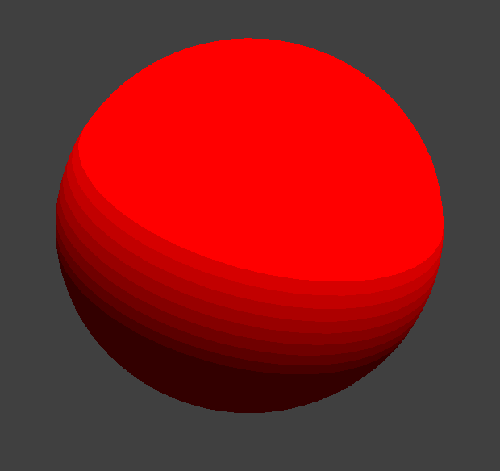
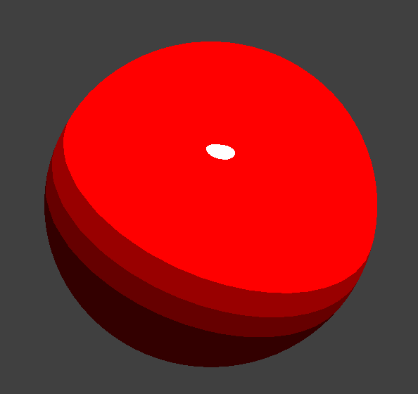
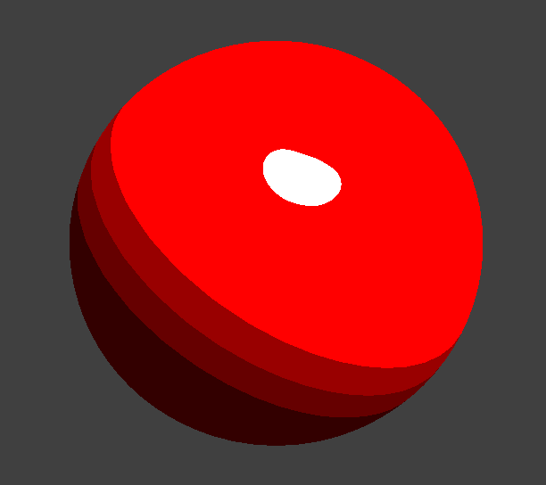
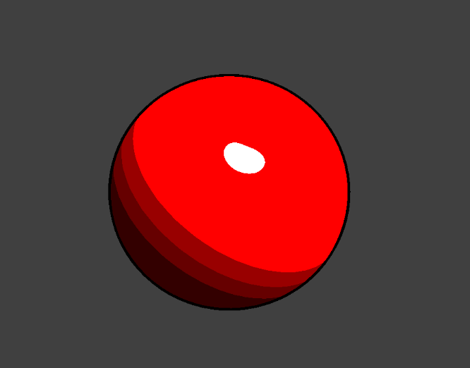

Cel Shading: 1st Deliverable
Tristan Burke, Andrew Noglows, Shivam Parikh
Preliminary Results and Progress
- Basic Cel Shading: The first and most important goal we had to implement was a basic version of cel-shading. After completing project 4 and realizing the power and relative simplicity of shader files, we decided that a custom ".frag" file would be the best place to start this initial implementation. Reading through many of the resources we collected for our proposal, our first pass simply checked the dot product of the face normal and the light source. We then compared this value to to see if it was . This completed our first cel-shaded image.

Black and White Cel Shaded Sphere - Customizing Band Number and Color: The next step was to add color and band customization to our shader. Originally we had hard coded if-statements to check the bounds of our dot product and assign a specific color. In order to generalize this process and allow customization, we created three variables: a band num (float), a min color (vec4), and a max color (vec4). We then interlopated between the range of our dot product, and the min / max colors, dividing uniform sections based off the band number.
 Dark Red to Light Red  Dark Red to Pure White  4 Banded Sphere  10 Banded Sphere - Specular highlights: The next effect we implemented was stylized specular highlights. In order to implement highlights, we closely resembled the specular aspect of the Blinn-Phong Reflection model. First we computed the wo vector based off the surface normal and light position. this allowed us to calculate the wi vector. Next, we calculated the halfedge between the Wi, and the vector pointing from our surface to the camera, calling this "H". In order to maintain our discrete cel shading, we added a cutoff that would color.
 Eta value of 0.02  Eta value of 0.1 - Black Edges: The next step was to add additional bands to our cel-shading, as well as color. Th
Red Cel Shaded Sphere - All Effects Combining this effects in the right order (cel-shading, specular, edge) gives us a great inital toon-shaded sphere.

Toon Shaded Sphere
Updated Plan
- Improved GUI yada yada
- Non-Uniform Band Selection
Video and Slides
Below you will find a video detailing some of our progress and implemented features.Here is a link to a few slides detailing our progress